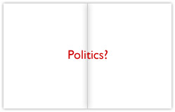

The Phone Call
At the 10 a.m. editorial meeting on Thursday, October 19, two days before the entire magazine would be sent to the printers, Managing Editor Stengel asked his colleagues for their opinions of the graphics project. The editors were enthusiastic about running it, even though many at the meeting had not seen Dykman’s project and at any rate, the religion spread was still the only finished part of the package. Their approval meant the project would go on. Moreover, by this point it had emerged as the frontrunner for the cover story that week. Stengel, however, had not yet made his final decision. That week’s magazine would also carry a story detailing five ways to withdraw from Iraq; there was a strong case to be made for putting that on the cover. It ultimately depended on what Stengel preferred.
Even now, Dykman did not have a clear grasp of Stengel’s intentions. “Now,” says Dykman, “I’m in panic mode because there’s always that little part of you [secretly hoping], man, he can kill it and I can just go home, I’m so tired, I haven’t seen my bed in two weeks.” Instead, he had to get back to work. It would be another late night at the office. “This was where Mr. Stengel dropped a hand grenade into my life,” Dykman recalls.
In terms of completed, printable work, Dykman on Thursday was still where he had been on Tuesday when Stengel had checked on the project. The religion spread was done, and the population density map was done. Though he had been collecting information from his reporters for the other spreads, he was still unsure what to do with it. “It was just a mess,” he reports.
It was somewhere around 10 [p.m.] and Rick [Stengel] called me on the phone. Rick never calls me, so… I'm like this is going to be the call where he kills it. He's thought about it and he's killed it. He's calling me on his cell phone, on his way home. I can hear traffic noises in the back[ground].
Stengel, it turned out, had no intention of killing the project. But he did have a suggestion. Feeling that the upcoming November 2006 midterm congressional elections could be pivotal, Stengel wanted to acknowledge the elections’ approach by including a spread about Americans’ political preferences. He also thought that such a spread would connect the entire package more strongly to current events. “Every year we can do ‘where we live,’” he explains. “Every year we can do ‘what we earn,’ and every year we can do ‘what we believe.’ I wanted something that was a little less evergreen, [something] that would feel more rooted in the contemporary.”
After Dykman hung up, he says, “I'm sitting there going, I still have three full spreads to finish. It's Thursday night. I have 24 hours and you want me to add two more [pages], from scratch, about politics?” Dykman considered his options. Stengel was his superior, but it was likely the managing editor would defer to Dykman’s judgment if the graphics director insisted there simply was not enough time to produce an additional spread.
But the tone of Stengel’s request discouraged him from doing so. “I’ve been around enough,” Dykman explains. “There’s a difference you can just sense between ‘Wouldn’t it be neat to do something about politics?’ and ‘We really need to do something about politics.’” Dykman recognized that Stengel’s overture was less of a request than an order. “It was pretty clear that this was a make or break issue,” he recalls. Refusing the new assignment could jeopardize the publication of the entire piece after three weeks of work.
 Dykman struggled to conceive how a political spread could fit into the overall aim of the piece, which he had designed to dispel commonly held misconceptions about American life. What could be surprising about the distribution of Democrats and Republicans in the nation? Americans’ party affiliations, Dykman thought, had been adequately reported two years earlier, after the 2004 presidential election. A “red-state, blue-state” map (which depicted Republican-majority states in red and Democratic-majority states in blue) had at the time become a familiar sight in newspapers and magazines across the country. Since there had been no nationwide elections in the meantime, any spread he could produce would have to rely on two-year-old election results. He did not have time to commission his own poll, which would take four or five days to complete. He also worried that, even if he could produce a politics spread in the time he had left, it might look hastily assembled and of lower quality than the rest of the package. Such a spread could attract Stengel’s disapproval in any case, again putting the entire piece at risk.
Dykman struggled to conceive how a political spread could fit into the overall aim of the piece, which he had designed to dispel commonly held misconceptions about American life. What could be surprising about the distribution of Democrats and Republicans in the nation? Americans’ party affiliations, Dykman thought, had been adequately reported two years earlier, after the 2004 presidential election. A “red-state, blue-state” map (which depicted Republican-majority states in red and Democratic-majority states in blue) had at the time become a familiar sight in newspapers and magazines across the country. Since there had been no nationwide elections in the meantime, any spread he could produce would have to rely on two-year-old election results. He did not have time to commission his own poll, which would take four or five days to complete. He also worried that, even if he could produce a politics spread in the time he had left, it might look hastily assembled and of lower quality than the rest of the package. Such a spread could attract Stengel’s disapproval in any case, again putting the entire piece at risk.
 |
 |
 |
 |
|  |  |
If Dykman succeeded in producing a politics spread that appealed to Stengel, however, that might be enough to catapult the story to the coveted position on the front cover. The fact that Stengel was demonstrating personal interest in the project this late in the week was an encouraging sign. Dykman would have to balance the advantages of satisfying Stengel—which likely meant he would have a cover to his credit—against the merits of sticking to his original concept for the story.